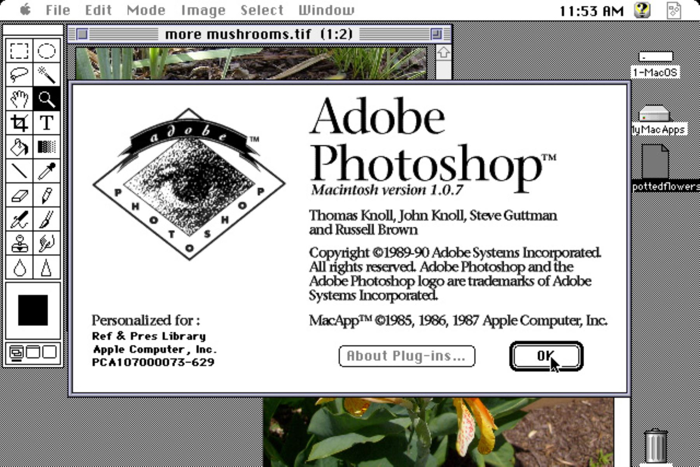

Dastur haqida
Adobe Photoshop — Adobe Inc. firmasi tomonidan ishlab chiqilgan va tarqatilyotgan koʻpfunksiyali grafik redaktor. Asosan rastrli tasvirlar bilan ishlashga moʻljallangan, biroq bir nechta vektorli vositalariga ega. Dastur Adobe firmasi mahsuloti sifatida mashhur va rastrli tasvirlarni tahrirlashda dunyoda eng oldi brendi hisoblanadi. Hozirda Photoshop macOS, Windows platformalariga, iOS, Windows Phone va Android mobil tizimlariga moslashtirilgan. Yana Windows 8 va Windows 8.1 uchun Photoshop Express versiyasi ham mavjud. Adobe Photoshop tasvirlarni tahrirlashdagi proffesional redaktor hisoblanadi.
